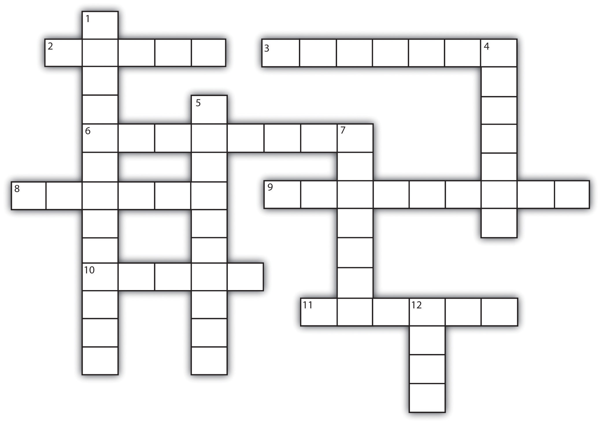

You can gain even more confidence in your test-taking abilities by understanding the different kinds of questions an instructor may ask and applying the following proven strategies for answering them. Most instructors will likely use various conventional types of questions. Here are some tips for handling the most common types.
Table 6.1 Words to Watch for in Essay Questions
| Word | What It Means | What the Instructor Is Looking For |
|---|---|---|
| Analyze | Break concept into key parts | Don’t just list the parts; show how they work together and illustrate any patterns. |
| Compare | Show similarities (and sometimes differences) between two or more concepts or ideas | Define the similarities and clearly describe how the items or ideas are similar. Do these similarities lead to similar results or effects? Note that this word is often combined with “contrast.” If so, make sure you do both. |
| Contrast | Show differences between two or more concepts or ideas | Define the differences and clearly describe how the items or ideas are different. How do these differences result in different outcomes? Note that this word is often combined with “compare.” If so, make sure you do both. |
| Critique | Judge and analyze | Explain what is wrong—and right—about a concept. Include your own judgments, supported by evidence and quotes from experts that support your point of view. |
| Define | Describe the meaning of a word, phrase, or concept | Define the concept or idea as your instructor did in class—but use your own words. If your definition differs from what the instructor presented, support your difference with evidence. Keep this essay short. Examples can help illustrate a definition, but remember that examples alone are not a definition. |
| Discuss | Explain or review | Define the key questions around the issue to be discussed and then answer them. Another approach is to define pros and cons on the issue and compare and contrast them. In either case, explore all relevant data and information. |
| Explain | Clarify, give reasons for something | Clarity is key for these questions. Outline your thoughts carefully. Proofread, edit, proofread, and proofread again! Good explanations are often lost in too many words. |
| Illustrate | Offer examples | Use examples from class material or reading assignments. Compare and contrast them to other examples you might come up with from additional reading or real life. |
| Prove | Provide evidence and arguments that something is true | Instructors who include this prompt in an exam question have often proven the hypothesis or other concepts in their class lectures. Think about the kind of evidence the instructor used and apply similar types of processes and data. |
| Summarize | Give a brief, precise description of an idea or concept | Keep it short, but cover all key points. This is one essay prompt where examples should not be included unless the instructions specifically ask for them. (For example, “Summarize the steps of the learning cycle and give examples of the main strategies you should apply in each one.”) |
Test your test knowledge.
Figure 6.6 Crossword
| Across | Down |
|---|---|
| 2. “Always,” “never,” and “every” are words that usually indicate the answer is ___________. | 1. It helps to group words in matching columns by ___________________ ___ _______________. |
| 3. A way to organize your thoughts for an essay | 4. Clarify, give reasons for something |
| 6. Short answer questions require a __________ answer. | 5. Essay questions often have more than one ________ answer. |
| 8. Describe the meaning of a word | 7. Show similarities and differences |
| 9. Give a brief, precise description of an idea or concept | 12. Most common answer in true and false questions |
| 10. Type of question used to evaluate thinking and reasoning | |
| 11. Since instructors need to read many essays, it is important to write _________. |